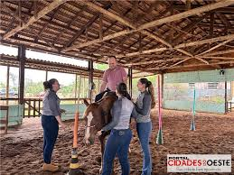

Associada de Missal da Sicredi Vanguarda PR/SP/RJ realiza sonho de ter um Centro de Equitação e Equoterapia

Mais do que soluções financeiras, na Sicredi você realiza sonhos e transforma vidas! Com o apoio da cooperativa, a associada Luana Fritzen Bart, que é médica veterinária, conseguiu construir um grande sonho: o Centro de Equitação e Equoterapia Vovó Alayde, que tem ajudado a comunidade com a reabilitação de muitos pacientes. Hoje o centro conta com atendimento de fisioterapeuta e psicóloga.
O Centro, em Missal (PR), atende cerca de 70 crianças. A terapia com cavalos, chamada de equoterapia é um método terapêutico que serve para estimular o desenvolvimento da mente e do corpo, melhorando as funções neurológicas. Esse método permite que o indivíduo desenvolva suas potencialidades, trabalhando aspectos relacionados a musculatura, força, flexibilidade, relaxamento, responsabilidade, sociabilização, autoconfiança e autoestima.
O sonho de Luana rendeu uma homenagem a sua avó, dona Alayde que esteve do lado da neta no apoio para a construção do Centro de equitação. Hoje, além de um sonho realizado, é apoio para reabilitação de pessoas com deficiência através dos cavalos. "É gratificante demais estar próximo das pessoas, ver a evolução das crianças e adultos que passam pelo centro, os pais falam pra gente cheios de gratidão que agora o filho está caminhando melhor, que melhorou na escola", conta Luana.
A Sicredi acredita no poder da cooperação! Quando um associado realiza seus sonhos, ele abre portas para que outras pessoas possam prosperar!